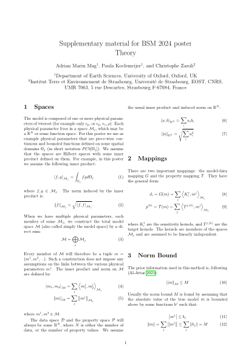

AM
Adrian Mag
About
Research
Publications
Presentations
AI-Assisted Research
Notes
My Take on SOLA
Think First, Discretize Later
Bayes, Measure-Theoretically
Bayesian vs Frequentist
The Road to Conjugate Gradients
CV
Contact
British Seismological Meeting 2024
Poster: "Constraining Earth model properties through Backus-Gilbert SOLA inferences"
Main Poster PDF

Details on the theory behind the solution.
More examples.